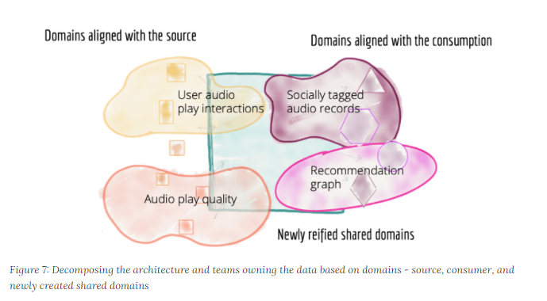

Referansearkitektur for deling av data i høyere utdanning og forsking
- 1. Bakgrunn
- 2. Målarkitekturen for datadeling i høyere utdanning og forskning
- 2.1. Om arkitekturprinsippenes føringer for datadeling
- 2.2. Hva er datadeling
- 2.3. Modeller for datadeling
- 2.4. Kapabiliteter
- 2.5. Felleskomponenter
- 2.6. Datautveksling
- 2.6.1. Datautveksling ved oppslag
- 2.6.1.1. Applikasjonsoversikt forespørsel
- 2.6.1.2. Applikasjonsoversikt forespørsel integrert med IAM
- 2.6.1.3. Applikasjonsoversikt forespørsel integrert nasjonalt
- 2.6.1.4. Registrere API UHF
- 2.6.1.5. Tilgjengeliggjøre data etter forspørsel løsningsmønster UHF
- 2.6.1.6. Få tilgang til data - løsningsmønster UHF
- 2.6.1.7. Innhente data - løsningsmønster UHF
- 2.6.1.8. Avgi data - løsningsmønster UHF
- 2.6.2. Datautveksling ved publisering – konsumering (hendelsesbasert)
- 2.6.1. Datautveksling ved oppslag
- 2.7. Integrasjonsmønster for datadeling
- 3. Forvaltning av målarkitekturen
- 4. Vedlegg 1 - Definisjoner
- 5. Vedlegg 2 - Behov for avklaringer og utfordringer i sektorens kontekst

1. Bakgrunn
Økt deling av data er en forutsetning for å realisere flere av handlingsplanens initiativer innenfor utdanning, forskning, administrasjon og IMD. Dette dokumentet beskriver de føringene til organisasjoner og IT-løsninger som vi ønsker å bruke videre i sektoren til å skape en effektiv plattform for datadeling. Referansearkitekturen tar utgangspunkt i følgende pågående arbeid i sektoren i dag:
-
Integrasjonsarkitektur UH:IntArk
-
Arbeid med Sak og Arkiv i sektoren
-
Arbeid med nytt API for Felles Studentsystem, FS
-
Arbeid med masterdatakilder for forskning
Referansearkitekturen innarbeider også føringer fra:
-
Digitaliseringsstrategiene til offentlig sektor og høyere utdanning og forskning
-
Overordnede arkitekturprinsipper for digitaliering av offentlig sektor
-
Nasjonal referansearkitekturene for datadeling og datautveksling
-
Kapabilitetsmodell i høyere utdanning i EUNIS (European University Information System Organization)
-
Behovene avdekket i tjenestedesign analyse av behovene til Studenter, Lærere, Forskere og tjenesteleverandører av Muliggjørende økosystem
Referansearkitekturer gir mønstre og veiledning til utforming av løsninger. Denne referansearkitekturen beskriver både eksisterende samhandling formulert som beste praksis og nødvendig neste steg i generelle datadelingsmønster som kan gjenbrukes i sektoren. Disse mønstrene er dokumentert gjennom videreutvikling av referansearkitekturene fra digitaliseringsdirektoratet. Hensikten med arbeidet er å fremme en koordinert utvikling av datadeling som resulterer i økt gjenbruk av data «kun en gang» og nye, innovative anvendelser av data i sektoren.
Noe om prosesser, rutiner og veiledninger.
Noe om forvaltning av rammeverket
1.1. Forankring
Referansearkitekturen er utarbeidet i et samarbeidsprosjekt Datadeling med prosjektdeltagelse fra Unit, NTNU, UiO og Uninett. Styringsgruppen består av medlemmer fra Unit, UiB, OsloMet, USIT, NMBU og Uninett.
Noe om forankring av referansearkitekturen
1.2. Målgruppe
Målgruppen for referansearkitekturen er primært arkitekter og tekniske prosjektledere.
1.3. Bruksområder for datadeling
Datadeling skal støtte virksomhetene innen høyere utdanning og forskning i sine oppgaver. Arbeid med referansearkitekturen tar derfor utgangspunkt i følgende bruksområder som første steg i en brukerfokusert tilnærming:
-
Innovativ, individuelt tilpasset læring
-
Livslang læring
-
Åpen forskning
-
Heidi: Skulle vi si noe om forskning som ikke er åpen
-
Effektivisert administrasjon
-
Automatisert administrativ støtte
-
Forskningssøknader
-
Data Management Planning innen forskning og andre prosjekter
-
Arkivering
-
HR prosesser for onboarding og «terminering?»
-
Innen bruksområdene over ser vi sektoren produserer og ønsker å tilby følgende hovedkategori av data for deling:
-
Utdannings- og forskningsressurser til gjenbruk og viderebruk
-
Forskningsresultater
-
Forskningsdata
-
Digitale læringsressurser
-
-
Administrative data
-
Grunndata for driftsformål
-
Data brukt og produsert i saksbehandling
-
Rapporteringsdata om egen saksbehandling og produksjon
-
-
Analysedata om utdanning og forskning
Sektoren har også bruk for data fra andre. Vi ser behov for følgende kategori av data:
-
Grunndata i nasjonale felleskomponenter (f. eks. folkeregisteret og enhetsregisteret)
-
Autentiseringsdata fra utlandet
-
Informasjon om grunnutdanning eller utdanning i utlandet
-
Informasjon om forskning i utlandet og forskningsresultater fra utlandet
-
Informasjon om forskning i privatnæringsliv og resultater fra forskning i privat næringsliv
-
Informasjon om forskningsfinansiering i Norge (fra Forskningsrådet, m. fl.)
Bruksområdene over er utgangspunktet for forståelse av behovene som referansearkitekturen skal dekke.
2. Målarkitekturen for datadeling i høyere utdanning og forskning
2.1. Om arkitekturprinsippenes føringer for datadeling
Pek til overordnede arkitekturprinsippene fra digitaliseringsdirektoratet og hva de betyr her.
Trenger vi noen justeringer av prinsippene?
Si noe om UH-IntArk prinsippene og forhold til de overordnede arkitekturprinsippene
2.2. Hva er datadeling
Følgende definisjon for datadeling er hentet fra Digitaliseringsdirektoratets segmentarkitektur for datadeling.
2.3. Modeller for datadeling
Når datatilbydere og datakonsumenter deler data, skjer det som en del av en digital samhandling. For at samhandlingen skal være vellykket, må tilbydere og konsumenter sikre at de handler i henhold til loven (juridisk samhandlingsevne), at aktørene har avklart forventninger til hverandre (organisatorisk samhandlingsevne), at datatilbyder og konsumenter har samme forståelse av dataenes betydning (semantisk samhandlingsevne) og at de tekniske løsningene som utfører datadeling fungerer sammen slik de skal (teknisk samhandlingsevne). Rammeverk for digital samhandling vist under utdyper disse samhandlingsevner.

Modellene i referansearkitekturen beskrevet under er laget for å ivareta juridisk-, organisatorisk-, semantisk- og teknisk samhandlingsevner og hjelper dermed de som benytter modellene til å lykkes med digital samhandling.
Nasjonale referansearkitekturer innen datadeling og datautveksling er fremdeles under utvikling. Vi gjenbruker her noen av modellene uendret, og tilpasser noen for høyere utdanning og forskning. Den overordnede verdistrømmen for datadeling og relaterte kapabiliteter avbildet under er uendret.
2.3.1. Del og innhent data, verdistrøm

| Element | Beskrivelse |
|---|---|
Datatilbyder <business-role> |
Tilbyder av data til andre aktører. API Eiere (kan eie Data som API gir tilgang til, eller system som tilbyr APIet)?? Når virksomheten tilbyr åpne data, vil det være virksomheten som eier dataene. (men det bør vel definere et domen-eier innenfor virksomheten) Data eier på to nivå: f. eks. studieavdelingen (er ikke dette behandlingsansvarlig?) spør studenten om de gir samtykke til å gi tilgang til data om studenten som hen eier. |
Del data <value-stream> |
|
Tilrettelegg for dataoppdagelse og datadeling <value-stream> |
|
Share data <value-stream> |
"Del data (operativt)" handler om utveksling av data gjennom etablerte kanaler og iht. avtaler. Dette forutsetter også håndtering av avvik og ikke-tilsiktede hendelser. |
Sett opp avtaler, løsninger og tilganger etter henvendelse <value-stream> |
|
Motta henvendelser om datadeling <value-stream> |
|
Ta rede på egne data og krav til datadeling <value-stream> |
|
Forbedre løsninger, sikkerhet og datakvalitet (tilbyder) <value-stream> |
|
Data-konsument <business-role> |
Den som innhenter eller mottar data fra andre aktører. |
Collect data <value-stream> |
|
Oppdag data og datakilder <value-stream> |
|
Be om tilganger og abonnementer <value-stream> |
|
Forespør og motta data <value-stream> |
|
Etabler avtaler og løsninger for datainnhenting <value-stream> |
|
Ta rede på behov for innhenting av data <value-stream> |
|
Forbedre løsninger, sikkerhet og datakvalitet (konsument) <value-stream> |
2.4. Kapabiliteter
Som vist i figuren over, må datatilbyderen ha oversikt over egne data som skal deles og evne til å publisere datasettene slik at andre kan benytte disse.
For at datadeling skal fungere etter hensikt, må dataene ha god kvalitet. Dette krever kapabiliteter innen informasjonsforvaltning. Vi har modellert disse evner som «muliggjørende kapabiliteter» i referansearkitekturen for høyere utdanning og forskning med utgangspunkt i EUNIS sin kapabilitetsmodell for europeiske universiteter som vist under.
God informasjonsforvaltning støtter både opp om organisatorisk samhandlingsevne gjennom å gi organisasjoner riktig data av god kvalitet og støtter opp om semantisk samhandlingsevne ved å klargjøre dataenes betydning. Vi velger også å synliggjøre juridiske tjenester som muliggjørende kapabilitet for å støtte opp under juridisk samhandlingsevne.
2.4.1. Innhent data, detaljert verdistrøm konsument med kapabiliteter

| Element | Beskrivelse |
|---|---|
Evnen til å se hvilke data som konsument har behov for <capability> |
Forklaring: Konsument må ha fokus på å etterspørre og bruke data fra tilbydere Løsning: En mulighet er at konsument har ansatte/ressurser som har datadeling som spesialområde og har tid og ressurser til å utføre oppgaven |
Evnen til å be om tilgang til data <capability> |
Forklaring: Datakonsument må evne å be om tilgang til aktuelle data Konsument må sørge for at tilbyder har forstått hva som etterspørres slik at misforståelser unngås Løsning: Tilgjengelige ressurser til dialogen med tilbyder |
Evnen til å finne frem til data blant tilbyders datakataloger og lignende <capability> |
Forklaring: Datakonsument trenger kompetanse på å finne frem til data slik at data som tilbys oppdages lett. Løsning: Kompetansebygging hos konsument på hvor data kan finnes/etterspørres |
Evnen til å vurdere om tilbyder kan dele etterspurte data <capability> |
Forklaring: Konsument må evne å vurdere om data som etterspørres kan deles. En del data er unntatt offentlighet som kan gjøre at tilbyder ikke har hjemmel til dele. Dersom etterspurte data er ressurskrevende å dele kan tilbyder velge å ikke dele Løsning: Bygge kompetanse på hvilke restriksjoner som gjelder ved deling av data |
Evnen til å utvikle IT løsninger for å motta data <capability> |
Forklaring: Konsument må sørge for å ha tekniske løsninger som støtter innhenting av dataene, og helst at dataene kan hentes på ønsket format. Løsning: Kompetanse på valg av IT løsninger, samt utvikling av IT løsningene |
Evnen til å innhente og bruke åpne data <capability> |
Forklaring: Konsument må vite hvordan dataene skal mottas og brukes. Løsning: Kompetanse på bruk av åpne data |
Data-konsument <business-role> |
Den som innhenter eller mottar data fra andre aktører. |
Collect data <value-stream> |
|
Oppdag data og datakilder <value-stream> |
|
Be om tilganger og abonnementer <value-stream> |
|
Forespør og motta data <value-stream> |
|
Etabler avtaler og løsninger for datainnhenting <value-stream> |
|
Forvalt og forbedre opplegg for innhenting av data <value-stream> |
|
Ta rede på behov for innhenting av data <value-stream> |
|
Evnen til å gi tilbyder tilbakemelding <capability> |
Forklaring: Datakonsument må evne å gi tilbyder tilbakemelding på hvordan dialogen med tilbyder oppleves. Dette for å bidra til at opplegget for datadeling forbedres Løsning: Konsument bør ha som rutine å gi tilbyder tilbakemelding på hvordan datadelingen fungerer |
Evnen til å vurdere om etterspurte data er tilgjengeliggjort som ‘Åpne data’ <capability> |
Forklaring: Konsument må finne ut om etterspurte data helt eller delvis er åpent tilgjengelighet. Dersom dataene er åpne kan konsument hente aktuelle data uten å henvende seg til tilbyder Løsning: Bygge kompetanse på ‘Åpne data’ |
Evnen til å dokumentere behandlingsgrunnlag <capability> |
Forklaring: Konsument må vite hva som kreves av behandlingsgrunnlag dersom henvendelsen gjelder personopplysninger. Behandlingsgrunnlaget må dokumenteres overfor tilbyder Løsning: Konsument må ha tilstrekkelig kompetanse på hva som kreves ved deling av personopplysninger |
Evnen til å inngå avtaler <capability> |
Forklaring: I en del tilfeller vil det være behov for utleveringsavtale som regulerer hvordan data utleveres og hvordan dataene brukes Dersom konsument skal betale for dataene må pris avklares og tas inn i avtale med tilbyder Løsning: Tilstrekkelig kompetanse på inngåelse av avtaler |
Evnen til å motta data etter henvendelse til datatilbyder <capability> |
Forklaring: Konsument må vite hvordan dataene skal mottas og brukes. Krav i eventuell utleveringsavtale må følges. Spesielt krav til sikkerhet må ivaretas, samt krav til håndtering av personopplysninger og andre skjermingsverdige data Løsning: Rutiner for riktig behandling av data i henhold til utleveringsavtale. Dette gjelder spesielt sikkerhet, samt riktig behandling av personopplysninger og andre skjermingsverdige data |
2.4.2. Del og innhent data og hendelser, detaljert verdistrøm datatilbyder med kapabiliteter
Forklaring: Datatilbyder må evne å bestemme hvilken teknisk løsning som skal benyttes når dataene gjøres tilgjengelig som åpne data
Datatilbyder må evne å velge hvor og hvordan dataene skal gjøres tilgjengelig, hvor skal datakonsument finne dataene og på hvilket format skal dataene deles
Datatilbyder må videre evne å bestemme detaljeringsgrad på dataene
Krav til personvern må kunne ivaretas, samt eventuelle krav i forhold til andre skjermingsverdige opplysninger
Løsning: Prosesser for å dele data som åpne data

| Element | Beskrivelse |
|---|---|
Evnen til å motta et teknisk kall, behandle dette og returnere respons <capability> |
Forklaring: Datatilbyder må ha ønsket tilgjengelighet på sine grensesnitt slik at konsumenter får ønsket respons på forespørsler innen rimelig tid. Løsning: Datatilbyder må enten selv ha et modent driftsmiljø som kan levere en tjeneste med rett kvalitet, eller så må man benytte en partner som kan tilby denne tjenesten på vegne av seg. Denne parten er en databehandler på vegne av datatilbyder. |
Evnen til å tilrettelegge data for deling <capability> |
Forklaring: Datatilbyder må evne å utvikle eller bruke tekniske løsninger for deling av data med konsumenten. Eventuell tilgangsstyring må tilrettelegges Løsning: Virksomheten bør ha beste praksis for hvordan data skal tilrettelegges for deling. Teknisk løsning for datadeling bør være på plass slik at data effektivt kan tilrettelegges for å konsumentens behov. Bruk av fellesfunksjonalitet som Maskinporten og Altinn Autorisasjon er kjent og kan benyttes i henhold til beste praksis. |
Evnen til å gi konsumenten tilgang til data <capability> |
Forklaring: Datatilbyder kjenner til hvordan man setter opp tilgang for nye konsumenter Løsning: Følger beste praksis for oppsett av tilgang i Maskinporten og eventuelt tilgangskontroll internt i virksomheten. |
Evnen til å publisere oversikt over virksomhetens datasett (fra orden i eget hus) <capability> |
Forklaring: Datatilbyder må evne å tilby datakonsument oversikt over data som virksomheten produserer slik at datakonsument enkelt kan oppdage data som tilbys. Videre bør det være opplyst hvordan datakonsument kan få tilgang til dataene Løsning: Prosesser for hvor og hvordan oversikt over virksomhetens datasett skal publiseres Legge oversikt over virksomhetens datasett på Felles datakatalog Eventuelt Intern datakatalog som kan benyttes til å publisere oversikten på Felles datakatalog. Om mulig automatisere høsting fra egne kataloger til felles datakatalog. Publisere oversikt over datatilbyders APIer |
Evnen til å utvikle IT-løsninger for deling av data <capability> |
Forklaring: Løsningene må kunne håndtere både åpne data og data som deles etter henvendelse IT løsningene bør kunne gjenbrukes slik at det ikke er nødvendig å utvikle løsninger hver gang det skal deles data Ved utvikling av nye IT løsninger til annen bruk i virksomhetene bør det tas høyde for at løsningene skal støtte deling av data Løsning: Prosesser som beskriver hvilke vurderinger som skal gjøres rundt valg av IT løsninger. Prosesser for utvikling av IT løsninger, samt implementering av disse. Det bør være en beste praksis at alle nye løsninger legger til rette for at data skal kunne deles («innebygd deling av data»). |
Evnen til å ta imot henvendelser om tilgang til data <capability> |
Forklaring: Datatilbyder må ha rutiner for å håndtere mottak av henvendelser slik at krav til eventuell journalføring, registrering og arkivering blir ivaretatt Datatilbyder må sørge for at henvendelsen er forstått slik at det ikke er uklarheter omkring konsumentens behov. Dersom tilbyder ikke har forstått hva konsument har behov for, må konsument kontaktes Det må videre håndteres hvordan henvendelsen skal følges opp videre i virksomheten Løsning: Rutine for mottak av henvendelser om tilgang til data for å sikre at henvendelser håndteres effektivt og ensartet Konsumentene må dokumentere sitt formål og behandlingsgrunnlag, og argumentere for hvilke informasjonselementer de mener de skal ha tilgang til for det gitte formålet. |
Datatilbyder <business-role> |
Tilbyder av data til andre aktører. API Eiere (kan eie Data som API gir tilgang til, eller system som tilbyr APIet)?? Når virksomheten tilbyr åpne data, vil det være virksomheten som eier dataene. (men det bør vel definere et domen-eier innenfor virksomheten) Data eier på to nivå: f. eks. studieavdelingen (er ikke dette behandlingsansvarlig?) spør studenten om de gir samtykke til å gi tilgang til data om studenten som hen eier. |
Del data <value-stream> |
|
Tilrettelegg for dataoppdagelse og datadeling <value-stream> |
|
Share data <value-stream> |
"Del data (operativt)" handler om utveksling av data gjennom etablerte kanaler og iht. avtaler. Dette forutsetter også håndtering av avvik og ikke-tilsiktede hendelser. |
Sett opp avtaler, løsninger og tilganger etter henvendelse <value-stream> |
|
Motta henvendelser om datadeling <value-stream> |
|
Forbedre løsninger, sikkerhet og datakvalitet (tilbyder) <value-stream> |
"Kontinuerlig forbedring av opplegg for deling av data" handler om aktiv forvaltning av operative løsninger for deling av data gjennom kontakt med datakonsumenter og tilpasning til nye behov, krav og teknologi. Kan også omfatte tilbakemeldinger på kvalitet på data og forbedring av datagrunnlaget. |
Ta rede på egne data og krav til datadeling <value-stream> |
|
Evnen til å organisere virksomheten slik at datadeling kan håndteres effektivt og etter gjeldene krav og regelverk <capability> |
Forklaring: Virksomheten må være organisert slik at den har kapasitet til å dele data. Videre må det settes fokus på deling slik at dette ikke blir nedprioritert i forhold til virksomhetens øvrige oppgaver Løsning: En mulighet er at virksomheten har ansatte som har datadeling som spesialområde og fått tid og ressurser til å utføre oppgaven |
Evnen til å etablere interne krav og retningslinjer for deling av data <capability> |
Forklaring: Internt må virksomheten forankre arbeidet med datadeling og det må settes krav til arbeidet og resultatet av virksomhetens deling av data Løsning: Krav til datadeling kan tas inn i virksomhetens planer og strategier. Det bør etableres en beste praksis for deling av data ut av huset som passer med referansearkitekturene for datautveksling. |
Evnen til å beskrive og ha oversikt over virksomhetens data (fra orden i eget hus) <capability> |
Forklaring: Beskrivelse av offentlige data i Norge skal utføres på en felles, strukturert måte og i en maskinlesbar form Informasjonsmodeller: Etablere felles begrepsapparat, standardiserte beskrivelser og sammenhengen mellom dataelementene Datakvaliteten bør være dokumentert, og kjente utfordringer knyttet til datakvalitet bør omtales eksplisitt i beskrivelsen. Det må være kjent hvilket formål data er innhentet for. Løsning: Bruke DCAT-AP-NO https://doc.difi.no/data/veileder-orden-i-eget-hus/#_beskrive_data |
Evnen til å vurdere og beskrive tilgang til data (fra orden i eget hus) <capability> |
Forklaring: Datatilbyder må evne å vurdere egne data med tanke på deling med eksterne konsumenter. Vurderingene som gjøres bør gjøres tilgjengelig for allmennheten Løsning: Vurdere om data kan deles ved å klassifisere data som grønn (offentlig), gul (begrenset offentlighet) og rød (unntatt offentlighet) Vurderingene bør dokumenteres og gjøres tilgjengelig for eventuelle konsumenter |
Evnen til å vurdere om data kan gjøres tilgjengelig som åpne data <capability> |
Forklaring: Hvis data klassifiseres som grønn (eventuelt gule data som kan være aktuelt å dele som åpne data), må det videre vurderes om dataene skal deles som åpne data. Her vil flere forhold kunne spille inn. Eksempel på dette er vurdering av om dataene er interessante for allmennheten, samt vurdering av kostnadene med å dele dataene sett i forhold til samfunnsnytten Løsning: Sjekkliste for vurderingene som skal gjøres før dataene eventuelt gjøres tilgjengelig som åpne data |
Evnen til å utarbeide avtaler <capability> |
Forklaring: I en del tilfeller vil det være behov for utleveringsavtale som regulerer hvordan data utleveres og hvordan dataene brukes av konsument Dersom konsument skal betale for dataene må pris avklares og tas inn i avtale med konsument Løsning: Mal for utleveringsavtale |
Evnen til å dele data som åpne data <capability> |
Forklaring: Datatilbyder må evne å bestemme hvilken teknisk løsning som skal benyttes når dataene gjøres tilgjengelig som åpne data Datatilbyder må evne å velge hvor og hvordan dataene skal gjøres tilgjengelig, hvor skal datakonsument finne dataene og på hvilket format skal dataene deles Datatilbyder må videre evne å bestemme detaljeringsgrad på dataene Krav til personvern må kunne ivaretas, samt eventuelle krav i forhold til andre skjermingsverdige opplysninger Løsning: Prosesser for å dele data som åpne data |
Evnen til å dele data etter henvendelse <capability> |
Forklaring: Datatilbyder må evne å vurdere hvordan dataene skal deles, hvilken teknisk løsning som skal benyttes, hvordan dataene skal tilrettelegges for konsument og hvordan skal tilgang til dataene håndteres. Skal dataen leveres som enkeltleveranse eller skal det være en fast leveranse Kompetanse på hvordan prising av leveransene skal håndteres, samt hvilke kostnader til datatilbyder skal eventuelt dekkes av konsument Datatilbyder må evne å bestemme detaljeringsgrad på dataene Krav til sikkerhet ved deling av data må kunne ivaretas Krav til personvern må ivaretas, samt eventuelle krav i forhold til andre skjermingsverdige opplysninger Løsning: Prosesser for å dele data etter henvendelse |
Evnen til å motta henvendelser om forbedringer <capability> |
Forklaring: Det bør være enkelt for datakonsument å gi tilbakemelding til virksomheten om hvordan datakonsument opplever datatilbyders tilbud av data. Datatilbyder må evne å motta og behandle tilbakemeldinger på en profesjonell måte. Løsning: Løsning for mottak av henvendelser. Kan eksempelvis være mottaksapparat i form av felles postkasse eller lignende. |
Evnen til å videreutvikle prosessene for deling av data <capability> |
Forklaring: For at virksomhetens deling av data skal videreutvikles og møte datakonsumentens behov, må virksomheten evne å endre måten datadeling gjennomføres på Løsning: Personer som er ansvarlige for virksomhetens prosesser for deling av data må behandle tilbakemeldingene. Det må deretter vurderes om det skal gjøres endringer i prosessene |
2.4.3. Muliggjørende kapabiliteter

| Element | Beskrivelse |
|---|---|
Muliggjørende kapabiliteter <capability> |
AKSJON: NTNU oppdaterer definisjon Hva organisasjonen gjør for å sikre at den fremmer og forbedrer sin profil og omdømme regionalt, nasjonalt og internasjonalt. Gjennom publisering av forskning og kompetanse, prestasjoner og oppnåelser til en rekke medier og nettverk, samtidig som de reagerer på direkte henvendelser fra pressen, og maksimerer positiv dekning i media. EUNIS: Enabling Capabilities |
Informasjonsforvaltning <capability> |
Aktiviteter og tiltak for å sikre best mulig kvalitet, utnytting og sikring av informasjon i en virksomhet [kilde data.norge.no]. Administrert Informasjon inkluderer strukturerte og ustrukturerte data med omfang som definert av retningslinjene for datasikkerhet og datahåndtering. EUNIS: Information management |
Informasjons-registrering, rettighetsklarering og publisering <capability> |
AKSJON: NTNU foreslår definisjon Hva organisasjonen gjør for å skaffe, vedlikeholde og administrere innhold på tvers av både digitale og fysiske plattformer. EUNIS: Enterprise Content Management |
Forvaltning av informasjons- og datasikkerhet <capability> |
Hva organisasjonen gjør for å vurdere, merke, overvåke, administrere og vedlikeholde informasjonssikkerhet, og gripe inn / eskalere i tilfelle brudd på informasjonssikkerhetspolitikken. Dette vil omfatte overholdelse av reguleringer, lovgivning og intern risikostyring. EUNIS: Information & Data Security Management |
Informasjons-gjenfinning <capability> |
Hva organisasjonen gjør for å lokalisere, indeksere, katalogisere og publisere informasjon for både intern og ekstern bruk. Dette kan omfatte data som ikke oppbevares av organisasjonen. EUNIS: Information Search & discovery |
Forvaltning av datakvalitet <capability> |
Hva organisasjonen gjør for å sikre at data er korrekte, komplette, oppdaterte og konsistente og har evnen til å støtte de informasjonsformål de brukes til. |
Juridiske tjenester <capability> |
Alle aktiviteter som har som mål å sikre tilgjengeligheten av effektive juridiske tjenester. EUNIS: Legal services |
2.4.4. Informasjonsforvaltningsdomener

| Element | Beskrivelse |
|---|---|
Informasjonsforvaltningsdomener <grouping> |
|
Strategi og styring <capability> |
Hva organisasjonen gjør for å utvikle og opprettholde et sammenhengende bilde av fremtiden EUNIS: Strategy and Governance |
Kommersiell aktivitet <capability> |
Alle egenskaper som kreves for å sikre at organisasjonen er i stand til å utvikle, levere, støtte og administrere kommersiell aktivitet. EUNIS: Commerical activity |
Undervisning og læring <capability> |
Alle kapabiliteter som kreves for å sikre at organisasjonen er i stand til å utvikle, levere, støtte og administrere undervisning og læring og studentopplevelsen. EUNIS: Teaching and learning |
Leveranse av undervisning og læring <capability> |
AKSJON: NTNU kommer med oppdatert forslag Hva organisasjonen gjør for å velge, allokere og administrere plassering av studenter i lærings- og praksismiljøer utenfor organisasjonen som en del av læreplanen. EUNIS: Teaching and Learning Delivery |
Undervisnings- og læringsinnhold <capability> |
AKSJON: NTNU - Teaching and learning content - NTNU sier "" ?? - mangler? EUNIS: Teaching and Learning Content |
Studieadministrasjon <capability> |
Alle aktiviteter som er rettet mot å håndtere faglige retningslinjer, forskrifter, planlegging og tilhørende tilbakemeldinger fra kunder. EUNIS: Student Administration |
Studieplanlegging <capability> |
Alle aktiviteter rettet mot lærere og administratorer som samarbeider om opprettelse, utvikling, konstruksjon, gjennomgang, godkjenning, vurdering og foredling av pensuminnhold for å oppnå ønskede studentresultater. EUNIS: Curriculum Management |
Student-vurdering <capability> |
AKSJON: NTNU kommer med definisjon |
Forskning <capability> |
Alle egenskaper som kreves for å sikre at organisasjonen er i stand til å utvikle, levere, støtte og administrere forskning. EUNIS: Research |
Forskningsproduksjon <capability> |
Alle aktiviteter rettet mot å gjennomføre og levere selve forskningen. EUNIS: Research Delivery |
Kurratering av forskningsdata <capability> |
Hva organisasjonen gjør for å lagre, dele, bruke og gjenbruke datasett produsert fra forskningsprosjekter, inkludert datasettstyringsplanlegging og kuratering av datasett utover levetiden til enkeltprosjekter. EUNIS: Dataset management |
Forskningsforvaltning og prioritering <capability> |
Hva organisasjonen gjør for å forvalte resultatene fra forskningsprosjekter, inkludert bevaring utover levetiden til enkeltprosjekter. EUNIS: Output Management |
Forskningsproduksjon <capability> |
Hva organisasjonen gjør for å produsere forskning. Dette er utførelsen av forskningsprosjektet. |
Forskningspublisering <capability> |
Alle aktiviteter rettet mot å publisere forskningsresultater og rapportere resultater. |
Rapportering av forskningsresultater <capability> |
Hva organisasjonen gjør for å utvikle og produsere rapporter om forskningsresultater, inkludert de som er nødvendige for å oppfylle kravene fra finansieringsorganer. EUNIS: Output Reporting |
Publiseringsforvaltning <capability> |
Hva organisasjonen gjør for å publisere og fremme forskningsresultater, og administrere publikasjonssamlingene sine helhetlig for å maksimere virkningen av dem. EUNIS: Publication Management |
Forskningsfinansiering <capability> |
Alle aktiviteter rettet mot å skaffe og forvalte midler til å gjennomføre forskningsprosjekter. EUNIS: Research funding |
2.5. Felleskomponenter
(i sektoren hittil har «felles» betyd både at alle bruker samme instans, eller at alle har identiske instanser – vi må presisere hva som er hva etter hvert)
Innledende tekst om hva slags funksjonalitet vi trenger i felleskomponenter og hvorfor, motivert fra kapabilitetene over.
Jeg har laget et Archimate view som heter «Felleskomponenter», men jeg vil ikke ha bildet, bare teksten som står i beskrivelse av kompontenene
-
Autentiseringstjeneste
-
API manager
-
API katalog / datakatalog
-
API gateway
-
Autorisasjonstjeneste / Nøkkelutsteder
-
Klient register
-
Identity Governance Administration (IGA)
Heidi NB: mangler komponenter for hendelsesstrømming/-publisering
2.6. Datautveksling
Med utgangspunkt i Referansearkitektur for datautveksling beskriv de mønstrene som vi bruker
2.6.1. Datautveksling ved oppslag
2.6.1.1. Applikasjonsoversikt forespørsel

| Element | Beskrivelse |
|---|---|
UHF Infrastruktur <grouping> |
|
Tokentjeneste <application-service> |
Tjeneste som utsteder sikkerhetsbilletter. Sikkerhetsbillett utstedes basert på tildelte rettigheter og eventuelle representasjonsforhold. |
Ressursportal <application-component> |
|
UHF Oauth2 autorisasjonstjener <application-component> |
Autorisasjonstjeneter realiserer tilgangskontroll gjennom å utstede OpenID Connect eller OAuth 2 grants og tokens. En autorisasjonstjener er også brukt til å realisere tilgangs policy. Scope (rettighet) og Audience (identifikator eller ressurs-server f. eks. FS) Per i dag er Scopes er grovkornet Rich authorization requsts (ny spesifikasjon) for å utvide scope begrep i IETF underenhet og behandlingssted, behandlingsgrunnlag og roller jobbes det med. |
UHF Klientregister <application-component> |
Oversikt over alle klienter som er blitt tildelt tilgang til ressurser. |
UHF API manager <application-component> |
Administrativ komponent som kontrollerer policy og livssyklus for definisjon og forvaltning av API. Tilganger gjennom et API defineres i API manager og tildeles av autorisasjonstjener. Ansvaret til API manager inkluderer: * Sentralisert API administrasjon og forvaltning av API-katalogen * Håndtering av registrerings- og introduksjonsprosesser for API utviklere * Håndtere livssyklusen til et API Ivareta registrering, forvaltning og og utvikling av klientrettigheter Hva tilbyr API av datamodell Hvordan ønsker API å sikre seg selv En klient må forholde seg til |
UHF API katalog <application-component> |
Oversikt over alle API som er registrert |
Registrere API i UHF sektoren <application-service> |
|
UHF tildel rettigheter til klienter <application-service> |
|
UiX <grouping> |
|
Kildedata <data-object> |
|
API Gateway hos dataeier / OAuth resource server <application-component> |
API gateway beskytter ressurser og monitorerer tilgang. Den håndhever tilgangsstyring ved å validere aksesstokens og utfører eventuell fin-granulert tilgangskontroll. Den håndhever også volumbegrenseninger og samler data om bruken av APIer (logging). Komponent som beskytter ressursene og monitorerer tilgang inklusivt: * Validere tilgangstoken * Beskytte mot inntrenging og andre trusler • Håndtere volumbegrensninger og andre abonnementsordninger • Håndheve tilgangsstyring • Samle inn data om bruken av API-er • [orkestrering mellom interntjeneser??] Prinsipp fra Steiner: Oppgaver både sikkerhetsperspektiv og forvaltningsperspektivet Dersom gatway skal stå for sikkerheten, MÅ VÆRE SIKKER PÅ at API ikke kan nås utenom gateway Noen må passe VELDIG godt på gatewayen og holder den oppdatert. Det må være et tydeligvalg om hvem (gateway eller API) har ansvar for sikkerhetsmessig. |
Kildedata <data-object> |
|
UiO <grouping> |
|
Kildedata <data-object> |
|
API Gateway hos dataeier / OAuth resource server <application-component> |
API gateway beskytter ressurser og monitorerer tilgang. Den håndhever tilgangsstyring ved å validere aksesstokens og utfører eventuell fin-granulert tilgangskontroll. Den håndhever også volumbegrenseninger og samler data om bruken av APIer (logging). Komponent som beskytter ressursene og monitorerer tilgang inklusivt: * Validere tilgangstoken * Beskytte mot inntrenging og andre trusler • Håndtere volumbegrensninger og andre abonnementsordninger • Håndheve tilgangsstyring • Samle inn data om bruken av API-er • [orkestrering mellom interntjeneser??] Prinsipp fra Steiner: Oppgaver både sikkerhetsperspektiv og forvaltningsperspektivet Dersom gatway skal stå for sikkerheten, MÅ VÆRE SIKKER PÅ at API ikke kan nås utenom gateway Noen må passe VELDIG godt på gatewayen og holder den oppdatert. Det må være et tydeligvalg om hvem (gateway eller API) har ansvar for sikkerhetsmessig. |
Kildedata <data-object> |
2.6.1.2. Applikasjonsoversikt forespørsel integrert med IAM

| Element | Beskrivelse |
|---|---|
Sluttbruker <business-actor> |
|
Klient <application-component> |
|
Identitetstilbyder <business-role> |
|
UHF Infrastruktur <grouping> |
|
Ressursportal <application-component> |
|
Roller og tilgangsregler <data-object> |
|
Attributter /grunndata <data-object> |
|
UHF Oauth2 autorisasjonstjener <application-component> |
Autorisasjonstjeneter realiserer tilgangskontroll gjennom å utstede OpenID Connect eller OAuth 2 grants og tokens. En autorisasjonstjener er også brukt til å realisere tilgangs policy. Scope (rettighet) og Audience (identifikator eller ressurs-server f. eks. FS) Per i dag er Scopes er grovkornet Rich authorization requsts (ny spesifikasjon) for å utvide scope begrep i IETF underenhet og behandlingssted, behandlingsgrunnlag og roller jobbes det med. |
UHF Klientregister <application-component> |
Oversikt over alle klienter som er blitt tildelt tilgang til ressurser. |
UHF tildel rettigheter til klienter <application-service> |
|
UiX <grouping> |
|
Kildedata <data-object> |
|
Kildedata <data-object> |
|
API Gateway hos dataeier / OAuth resource server <application-component> |
API gateway beskytter ressurser og monitorerer tilgang. Den håndhever tilgangsstyring ved å validere aksesstokens og utfører eventuell fin-granulert tilgangskontroll. Den håndhever også volumbegrenseninger og samler data om bruken av APIer (logging). Komponent som beskytter ressursene og monitorerer tilgang inklusivt: * Validere tilgangstoken * Beskytte mot inntrenging og andre trusler • Håndtere volumbegrensninger og andre abonnementsordninger • Håndheve tilgangsstyring • Samle inn data om bruken av API-er • [orkestrering mellom interntjeneser??] Prinsipp fra Steiner: Oppgaver både sikkerhetsperspektiv og forvaltningsperspektivet Dersom gatway skal stå for sikkerheten, MÅ VÆRE SIKKER PÅ at API ikke kan nås utenom gateway Noen må passe VELDIG godt på gatewayen og holder den oppdatert. Det må være et tydeligvalg om hvem (gateway eller API) har ansvar for sikkerhetsmessig. |
Autentiseringstjeneste <application-service> |
Tjeneste som benyttes av tilbyder for å autentisere aktuell konsument. |
2.6.1.3. Applikasjonsoversikt forespørsel integrert nasjonalt

| Element | Beskrivelse |
|---|---|
UHF Infrastruktur <grouping> |
|
Tokentjeneste <application-service> |
Tjeneste som utsteder sikkerhetsbilletter. Sikkerhetsbillett utstedes basert på tildelte rettigheter og eventuelle representasjonsforhold. |
Registrere API i UHF sektoren <application-service> |
|
UHF tildel rettigheter til klienter <application-service> |
|
Ressursportal <application-component> |
|
UHF Oauth2 autorisasjonstjener <application-component> |
Autorisasjonstjeneter realiserer tilgangskontroll gjennom å utstede OpenID Connect eller OAuth 2 grants og tokens. En autorisasjonstjener er også brukt til å realisere tilgangs policy. Scope (rettighet) og Audience (identifikator eller ressurs-server f. eks. FS) Per i dag er Scopes er grovkornet Rich authorization requsts (ny spesifikasjon) for å utvide scope begrep i IETF underenhet og behandlingssted, behandlingsgrunnlag og roller jobbes det med. |
UHF Klientregister <application-component> |
Oversikt over alle klienter som er blitt tildelt tilgang til ressurser. |
UHF API manager <application-component> |
Administrativ komponent som kontrollerer policy og livssyklus for definisjon og forvaltning av API. Tilganger gjennom et API defineres i API manager og tildeles av autorisasjonstjener. Ansvaret til API manager inkluderer: * Sentralisert API administrasjon og forvaltning av API-katalogen * Håndtering av registrerings- og introduksjonsprosesser for API utviklere * Håndtere livssyklusen til et API Ivareta registrering, forvaltning og og utvikling av klientrettigheter Hva tilbyr API av datamodell Hvordan ønsker API å sikre seg selv En klient må forholde seg til |
UHF API katalog <application-component> |
Oversikt over alle API som er registrert |
Nasjonal infrastruktur <grouping> |
|
Maskinporten <application-component> |
[Torget] Maskinporten er en løsning for tilgangsstyring for virksomheter som utveksler data. Løsningen garanterer identiteten mellom virksomheter, og sørger for maskin-til-maskin autentisering. [Verktøykasse for deling av data] Maskinporten sørger for sikker autentisering og tilgangskontroll for datautveksling mellom virksomheter, maskin til maskin. Dette gir teknisk og organisatorisk samhandlingsevne. Mer om Maskinporten: https://www.digdir.no/digitale-felleslosninger/maskinporten/869 |
Altinn autorisasjon <application-component> |
[Torget] Autorisasjonskomponenten i Altinn som gir muligheter til å delegere rettigheter til andre organisasjoner eller personer. Rettigheter til bruk av autorisasjonskomponenten baserer seg på registrerte roller i Enhetsregisteret. Altinn autorisasjon leverer også tjenester for å registrere og kontrollere samtykke gitt av person eller virksomhet. [Verktøykasse for deling av data] Altinn autorisasjon gir teknisk samhandlingsevne ved at bruker logger inn med elektronisk ID, autorisasjonskomponenten sjekker at bruker har de tilgangene som kreves for å ta i bruk aktuell tjeneste. Dersom en privatperson skal ta i bruk en tjeneste på vegne av en virksomhet, gjøres det et oppslag mot Enhetsregisteret for å bekrefte at personen har en rolle på vegne av virksomheten. Dette gir organisatorisk samhandlingsevne. Mer om Altinn autorisasjon: https://www.altinndigital.no/produkter/styring-av-tilgang/ |
Felles API-katalog <application-component> |
Del av Felles datakatalog som gir mulighet for å søke etter API-er og lese API-spesifikasjoner https://fellesdatakatalog.brreg.no/apis |
2.6.1.4. Registrere API UHF
En arbeidsflyt som datatilbyder må gjennomføre for å gjøre et API synlig og tilgjengelig gjennom kataloger og søkeløsninger. Metadata om APIet blir registrert i API-katalogen. Metadata inkluderer begreper og datamodeller omfattet av datasettet som APIet tilgjengeliggjør, samt tilganger (scopes) knyttet til APIet som kan tildeles konsumenter.
Kanskje omdøpe kapabiliteten til "Publiser API"

| Element | Beskrivelse |
|---|---|
OAUTH scopes <data-object> |
Hvordan får Dataobjekt som som kan beskrives som en ressurs-definisjon, og et token er som regel knyttet til ett eller flere scopes. Scopes benyttes til å styre tilganger til API-er og operasjoner, samt eventuelt hva slags responser man får fra API-er. Fra eHelse: Regler for et API som beskriver hvilke tilganger en datakonsument (representert ved organisasjonsnummer) og deres klienter skal ha tilgang til (utstedt token for). |
Token-egenskaper <data-object> |
Egenskaper som f.eks. gyldighetstid ved tilgangstoken som er Maskinportens variant av sikkerhetsbillett. |
Datatilbyder <business-role> |
Tilbyder av data til andre aktører. API Eiere (kan eie Data som API gir tilgang til, eller system som tilbyr APIet)?? Når virksomheten tilbyr åpne data, vil det være virksomheten som eier dataene. (men det bør vel definere et domen-eier innenfor virksomheten) Data eier på to nivå: f. eks. studieavdelingen (er ikke dette behandlingsansvarlig?) spør studenten om de gir samtykke til å gi tilgang til data om studenten som hen eier. |
Maskinporten <application-component> |
[Torget] Maskinporten er en løsning for tilgangsstyring for virksomheter som utveksler data. Løsningen garanterer identiteten mellom virksomheter, og sørger for maskin-til-maskin autentisering. [Verktøykasse for deling av data] Maskinporten sørger for sikker autentisering og tilgangskontroll for datautveksling mellom virksomheter, maskin til maskin. Dette gir teknisk og organisatorisk samhandlingsevne. Mer om Maskinporten: https://www.digdir.no/digitale-felleslosninger/maskinporten/869 |
Registrere API i UHF sektoren <application-service> |
|
API Beskrivelse <data-object> |
Open API spesifikasjon (har vi føringer på format her)? VI ønsker oss beskrivelse av datamodell og begreper som finnes i begrepskatalog og datamodell katalog (per default bruker vi det nasjonale, men kan hende vi må bruke noe for sektoren om ikke funksjonalitet er dekket |
UHF definer rettighetter knyttet til APIer <application-service> |
UHF sentralisert selvbetjeningstjeneste for administrasjon av integrasjoner og APIer. Tjeneste "administrasjonssentre" vil ha rettigheter til å registrere på vegne av andre f.eks. API-katalogen Definere hvilke scopes finnes koblet til et API |
Registrere API <capability> |
|
Registrere API <business-process> |
Prosess med å registere API i relevante tjenester, api-katalog, Maskinporten, Kapabilitetsoversikt |
Felles API-katalog <application-component> |
Del av Felles datakatalog som gir mulighet for å søke etter API-er og lese API-spesifikasjoner https://fellesdatakatalog.brreg.no/apis |
UHF API manager <application-component> |
Administrativ komponent som kontrollerer policy og livssyklus for definisjon og forvaltning av API. Tilganger gjennom et API defineres i API manager og tildeles av autorisasjonstjener. Ansvaret til API manager inkluderer: * Sentralisert API administrasjon og forvaltning av API-katalogen * Håndtering av registrerings- og introduksjonsprosesser for API utviklere * Håndtere livssyklusen til et API Ivareta registrering, forvaltning og og utvikling av klientrettigheter Hva tilbyr API av datamodell Hvordan ønsker API å sikre seg selv En klient må forholde seg til |
UHF API katalog <application-component> |
Oversikt over alle API som er registrert |
2.6.1.5. Tilgjengeliggjøre data etter forspørsel løsningsmønster UHF
En arbeidsflyt som datatilbyder må gjennomføre for å tildele rettigheter til en konsument som ber om tilgang til data. En datatilbyder mottar forespørsel om tilgang til et API på vegne av en organisasjon eller bruker. Dataeieren tar stilling til om konsumenten skal få tilgang til data gjennom APIet. Tilgang registreres knyttet til konsumentens klient (applikasjonen som benytter APIet) i klientregisteret.

| Element | Beskrivelse |
|---|---|
Tilganger konsument <data-object> |
Oversikt over hvilke API og OAUTH-scopes en virksomhet (representert ved organisasjonsnummer) skal ha tilgang til (utstedt token for). |
Datatilbyder <business-role> |
Tilbyder av data til andre aktører. API Eiere (kan eie Data som API gir tilgang til, eller system som tilbyr APIet)?? Når virksomheten tilbyr åpne data, vil det være virksomheten som eier dataene. (men det bør vel definere et domen-eier innenfor virksomheten) Data eier på to nivå: f. eks. studieavdelingen (er ikke dette behandlingsansvarlig?) spør studenten om de gir samtykke til å gi tilgang til data om studenten som hen eier. |
Tilgjengeliggjør data etter forselpørsel <business-process> |
Prosessen med å tilby data gjennom et API til aktører utenfor egen virksomhet. |
Tildele tilganger til API <business-process> |
Prosess for å registrere hvilke databrukere som skal få tilgang Sette policy, og grov tilgangsstyring gjennom maskinporten. |
Inngå avtale om tilgang til data <business-process> |
Prosess for å inngå avtale om tilgang og bruk av data. |
Registrere brukere av samtykke <business-process> |
Prosess for å registrere konsumenter som skal ha mulighet for å innhente samtykker som gir tilgang til en tjeneste. Dette utføres kun om det er behov for samtykke for tilgang til dataene. |
Maskinporten <application-component> |
[Torget] Maskinporten er en løsning for tilgangsstyring for virksomheter som utveksler data. Løsningen garanterer identiteten mellom virksomheter, og sørger for maskin-til-maskin autentisering. [Verktøykasse for deling av data] Maskinporten sørger for sikker autentisering og tilgangskontroll for datautveksling mellom virksomheter, maskin til maskin. Dette gir teknisk og organisatorisk samhandlingsevne. Mer om Maskinporten: https://www.digdir.no/digitale-felleslosninger/maskinporten/869 |
Altinn autorisasjon <application-component> |
[Torget] Autorisasjonskomponenten i Altinn som gir muligheter til å delegere rettigheter til andre organisasjoner eller personer. Rettigheter til bruk av autorisasjonskomponenten baserer seg på registrerte roller i Enhetsregisteret. Altinn autorisasjon leverer også tjenester for å registrere og kontrollere samtykke gitt av person eller virksomhet. [Verktøykasse for deling av data] Altinn autorisasjon gir teknisk samhandlingsevne ved at bruker logger inn med elektronisk ID, autorisasjonskomponenten sjekker at bruker har de tilgangene som kreves for å ta i bruk aktuell tjeneste. Dersom en privatperson skal ta i bruk en tjeneste på vegne av en virksomhet, gjøres det et oppslag mot Enhetsregisteret for å bekrefte at personen har en rolle på vegne av virksomheten. Dette gir organisatorisk samhandlingsevne. Mer om Altinn autorisasjon: https://www.altinndigital.no/produkter/styring-av-tilgang/ |
Registrere samtykkebasert tilgang <application-service> |
Tjeneste for å registerer konsumenter som kan innhente samtykke som gir grunnlag for utlevering fra datatilbyder. |
Aktører som kan innhente samtykke for bruk av API <data-object> |
Oversikt over aktører som skal ha mulighet til å innhente samtykke som grunnlag for å få tilgang til data gjennom et API. URL til konsumenten det kan innhentes samtykke for må inngå i beskrivelsen. |
Tilgjengeliggjøre data etter forespørsel <capability> |
|
API tilgangs-forespørsel <application-service> |
API eieren får forespørsel om den vil gi konsumenten tilgang til APIet. |
Godkjenn tilgang <application-service> |
|
UHF tildel rettigheter til klienter <application-service> |
|
Ressursportal <application-component> |
|
Forespør dataeier <application-service> |
Harmoniserers med rolledefinisjoner. Kan en databehandler besvare forespørselen automatisk på grunnlag av forhåndsdefinerte instruks? |
2.6.1.6. Få tilgang til data - løsningsmønster UHF
En arbeidsflyt en konsument av data må gjennomføre for å få tildelt rettigheter til data gjennom et API. Det omfatter å få kjennskap til aktuelt API gjennom API-katalogen, autentisere konsumenten, inngå avtale om bruk av data, samt å registrere tilganger hos den tekniske komponenten som skal utføre tjenestekallet. Dersom det dreier seg om tilgang til et åpent tilgjengelig API, kan enkelte delaktiviteter i prosessene hoppes over, men for å kunne logge informasjon om bruk av APIer bør alle konsumenter av et API registreres i klientregisteret.

| Element | Beskrivelse |
|---|---|
Data-konsument <business-role> |
Den som innhenter eller mottar data fra andre aktører. |
Få tilgang til API <business-process> |
Prosessen med å skaffe seg tilgang til tilbudte data fra annen aktør. Omfatte å finne API-er, inngå nødvendige avtaler og få tilganger. |
Inngå avtale om tilgang til data <business-process> |
Prosess for å inngå avtale om tilgang og bruk av data. |
Registrer klient med tildelt tilgang <business-process> |
Prosess for konsument å registerere (provisjonering av) den klienten som skal ha tilgang til API-et ved bruk av sikkerhetsbillett. Dette forutsetter at konsumenten har avtale om bruk av sikkerhetsbillettjenesten og at tilbyder har gitt konsumenten tilgang. Dersom det er en leverandør som har blitt delegert rettigheter som databehandler på vegne av konsument er det leverandøren som registrer sin klient. |
Finn/få kjennskap til API <business-process> |
Prosessen med å finne eller få kjennskap til tilgjengelige API-er gjennom relevante kataloger og søkeløsninger. |
Autentisere konsument <business-process> |
Prosessen med å autentisere en konsument. |
Beskrivelse API <data-object> |
Dataobjekt som er en maskinlesbar beskrivelse av REST API-er iht. Open API Specification. Dette er formatet som benyttes for å registrere et API i felles API-katalog Ønsker å bruke Open API spesifikasjon |
API-søk <application-service> |
Tjeneste for å søke etter og finne tilgjengelige API-er |
Få tilgang til data (konsument) <capability> |
Evnen til å skaffe seg tilgang til tilbudte data fra annen aktør. |
UHF API katalog <application-component> |
Oversikt over alle API som er registrert |
UHF tildel rettigheter til klienter <application-service> |
|
API tilgangs-forespørsel <application-service> |
API eieren får forespørsel om den vil gi konsumenten tilgang til APIet. |
UHF Oauth2 autorisasjonstjener <application-component> |
Autorisasjonstjeneter realiserer tilgangskontroll gjennom å utstede OpenID Connect eller OAuth 2 grants og tokens. En autorisasjonstjener er også brukt til å realisere tilgangs policy. Scope (rettighet) og Audience (identifikator eller ressurs-server f. eks. FS) Per i dag er Scopes er grovkornet Rich authorization requsts (ny spesifikasjon) for å utvide scope begrep i IETF underenhet og behandlingssted, behandlingsgrunnlag og roller jobbes det med. |
UHF Klientregister <application-component> |
Oversikt over alle klienter som er blitt tildelt tilgang til ressurser. |
OAUTH scopes <data-object> |
Hvordan får Dataobjekt som som kan beskrives som en ressurs-definisjon, og et token er som regel knyttet til ett eller flere scopes. Scopes benyttes til å styre tilganger til API-er og operasjoner, samt eventuelt hva slags responser man får fra API-er. Fra eHelse: Regler for et API som beskriver hvilke tilganger en datakonsument (representert ved organisasjonsnummer) og deres klienter skal ha tilgang til (utstedt token for). |
2.6.1.7. Innhente data - løsningsmønster UHF
En arbeidsflyt en konsument utfører når det utføres et tjenestekall for å innhente data gjennom et API. API-adressen hentes i API-katalogen. Tilgang til APIet byttes inn mot et kjøretids-token i autoriseringstjenesten. Tjenestekall til APIet utføres gjennom API gateway der tokenet benyttes for å få tilgang. Dersom det er et åpent API er det kun relevante prossessteg som utføres.

| Element | Beskrivelse |
|---|---|
Maskinporten <application-component> |
[Torget] Maskinporten er en løsning for tilgangsstyring for virksomheter som utveksler data. Løsningen garanterer identiteten mellom virksomheter, og sørger for maskin-til-maskin autentisering. [Verktøykasse for deling av data] Maskinporten sørger for sikker autentisering og tilgangskontroll for datautveksling mellom virksomheter, maskin til maskin. Dette gir teknisk og organisatorisk samhandlingsevne. Mer om Maskinporten: https://www.digdir.no/digitale-felleslosninger/maskinporten/869 |
Data-konsument <business-role> |
Den som innhenter eller mottar data fra andre aktører. |
Tokentjeneste <application-service> |
Tjeneste som utsteder sikkerhetsbilletter. Sikkerhetsbillett utstedes basert på tildelte rettigheter og eventuelle representasjonsforhold. |
Virksomhetssertifikat <data-object> |
En virksomhets elektroniske ID. Benyttes for å autentisere virksomheten overfor tokentjenesten. |
Innhente data <capability> |
Evnen til å innhente data fra en annen aktør. |
Endepunkt (adresse) <data-object> |
Dataobjekt som representerer teknisk adresse til et API eller ressurs. |
Oppslag representasjons-forhold <application-service> |
Tjeneste som benyttes av tokentjenesten for å kontrollere om det foreligger et delegert representasjonsforhold fra konsument til leverendør i autorisasjonstjenesten til Altinn. |
Slå opp data gjennom et API <business-process> |
Prosessen med å slå opp og hente data gjennom et API. |
Hent teknisk endepunkt ved behov <business-process> |
Prosessen å slå opp den tekniske adressen til et API før spørring mot API-et. Gjøres kun dersom det er nødvendig. |
Be om tilgangstoken <business-process> |
Prosessen med å benytte en sikkerhetsbillettjeneste for hente en sikkerhetsbillett som gir tilgang til et API. Dette forutsetter at alt er registert og satt opp riktig mot de aktuelle tjenestene. |
Utfør tjenestekall <business-process> |
Prosessen med å benytte (gjøre et oppslag mot) et eksternt API. |
Innhent samtykke ved behov <business-process> |
Prosess for å innhente samtykke fra person eller virksomhet som grunnlag for å innhente data. Dette gjøres kun ved behov. |
Junction <junction> |
|
Junction <junction> |
|
Tilganger konsument <data-object> |
Oversikt over hvilke API og OAUTH-scopes en virksomhet (representert ved organisasjonsnummer) skal ha tilgang til (utstedt token for). |
Altinn autorisasjon <application-component> |
[Torget] Autorisasjonskomponenten i Altinn som gir muligheter til å delegere rettigheter til andre organisasjoner eller personer. Rettigheter til bruk av autorisasjonskomponenten baserer seg på registrerte roller i Enhetsregisteret. Altinn autorisasjon leverer også tjenester for å registrere og kontrollere samtykke gitt av person eller virksomhet. [Verktøykasse for deling av data] Altinn autorisasjon gir teknisk samhandlingsevne ved at bruker logger inn med elektronisk ID, autorisasjonskomponenten sjekker at bruker har de tilgangene som kreves for å ta i bruk aktuell tjeneste. Dersom en privatperson skal ta i bruk en tjeneste på vegne av en virksomhet, gjøres det et oppslag mot Enhetsregisteret for å bekrefte at personen har en rolle på vegne av virksomheten. Dette gir organisatorisk samhandlingsevne. Mer om Altinn autorisasjon: https://www.altinndigital.no/produkter/styring-av-tilgang/ |
Felles API-katalog <application-component> |
Del av Felles datakatalog som gir mulighet for å søke etter API-er og lese API-spesifikasjoner https://fellesdatakatalog.brreg.no/apis |
Adressetjeneste <application-service> |
Tjeneste som gir mulighet til å slå opp teknisk endepunkt |
Datautvekslings-tjeneste <application-service> |
Tjeneste for utveksling av data over aktuell transportprotokoll, f.eks, gjennom asynkrone medlinger eller synkrone API-oppslag. |
Samtykkeregistererings-tjeneste <application-service> |
Tjeneste for å innhente samtykke fra den registrert som dataene gjelder. Dette kan være en person eller en virksomhet. |
Altinn autorisasjon <application-component> |
[Torget] Autorisasjonskomponenten i Altinn som gir muligheter til å delegere rettigheter til andre organisasjoner eller personer. Rettigheter til bruk av autorisasjonskomponenten baserer seg på registrerte roller i Enhetsregisteret. Altinn autorisasjon leverer også tjenester for å registrere og kontrollere samtykke gitt av person eller virksomhet. [Verktøykasse for deling av data] Altinn autorisasjon gir teknisk samhandlingsevne ved at bruker logger inn med elektronisk ID, autorisasjonskomponenten sjekker at bruker har de tilgangene som kreves for å ta i bruk aktuell tjeneste. Dersom en privatperson skal ta i bruk en tjeneste på vegne av en virksomhet, gjøres det et oppslag mot Enhetsregisteret for å bekrefte at personen har en rolle på vegne av virksomheten. Dette gir organisatorisk samhandlingsevne. Mer om Altinn autorisasjon: https://www.altinndigital.no/produkter/styring-av-tilgang/ |
API Gateway hos dataeier / OAuth resource server <application-component> |
API gateway beskytter ressurser og monitorerer tilgang. Den håndhever tilgangsstyring ved å validere aksesstokens og utfører eventuell fin-granulert tilgangskontroll. Den håndhever også volumbegrenseninger og samler data om bruken av APIer (logging). Komponent som beskytter ressursene og monitorerer tilgang inklusivt: * Validere tilgangstoken * Beskytte mot inntrenging og andre trusler • Håndtere volumbegrensninger og andre abonnementsordninger • Håndheve tilgangsstyring • Samle inn data om bruken av API-er • [orkestrering mellom interntjeneser??] Prinsipp fra Steiner: Oppgaver både sikkerhetsperspektiv og forvaltningsperspektivet Dersom gatway skal stå for sikkerheten, MÅ VÆRE SIKKER PÅ at API ikke kan nås utenom gateway Noen må passe VELDIG godt på gatewayen og holder den oppdatert. Det må være et tydeligvalg om hvem (gateway eller API) har ansvar for sikkerhetsmessig. |
UHF Oauth2 autorisasjonstjener <application-component> |
Autorisasjonstjeneter realiserer tilgangskontroll gjennom å utstede OpenID Connect eller OAuth 2 grants og tokens. En autorisasjonstjener er også brukt til å realisere tilgangs policy. Scope (rettighet) og Audience (identifikator eller ressurs-server f. eks. FS) Per i dag er Scopes er grovkornet Rich authorization requsts (ny spesifikasjon) for å utvide scope begrep i IETF underenhet og behandlingssted, behandlingsgrunnlag og roller jobbes det med. |
UHF API katalog <application-component> |
Oversikt over alle API som er registrert |
2.6.1.8. Avgi data - løsningsmønster UHF
En arbeidsflyt en tilbyder av data utfører for å svare på en dataforespørsel. Tilbyder mottar forespørsel om oppslag med et aksesstoken. Klienten som forespør autentiseres og token valideres. Eventuelt mer fin-granulert tilgangskontroll utføres og data returneres. Tilgang kontrolleres kun dersom det er snakk om et sikret API.

| Element | Beskrivelse |
|---|---|
Egen autorisasjons-komponent <application-component> |
Komponent for å håndheve virksomhetens regler for tilgang. Også kalt policy enforcement point (PEP). |
Altinn autorisasjon <application-component> |
[Torget] Autorisasjonskomponenten i Altinn som gir muligheter til å delegere rettigheter til andre organisasjoner eller personer. Rettigheter til bruk av autorisasjonskomponenten baserer seg på registrerte roller i Enhetsregisteret. Altinn autorisasjon leverer også tjenester for å registrere og kontrollere samtykke gitt av person eller virksomhet. [Verktøykasse for deling av data] Altinn autorisasjon gir teknisk samhandlingsevne ved at bruker logger inn med elektronisk ID, autorisasjonskomponenten sjekker at bruker har de tilgangene som kreves for å ta i bruk aktuell tjeneste. Dersom en privatperson skal ta i bruk en tjeneste på vegne av en virksomhet, gjøres det et oppslag mot Enhetsregisteret for å bekrefte at personen har en rolle på vegne av virksomheten. Dette gir organisatorisk samhandlingsevne. Mer om Altinn autorisasjon: https://www.altinndigital.no/produkter/styring-av-tilgang/ |
Datatilbyder <business-role> |
Tilbyder av data til andre aktører. API Eiere (kan eie Data som API gir tilgang til, eller system som tilbyr APIet)?? Når virksomheten tilbyr åpne data, vil det være virksomheten som eier dataene. (men det bør vel definere et domen-eier innenfor virksomheten) Data eier på to nivå: f. eks. studieavdelingen (er ikke dette behandlingsansvarlig?) spør studenten om de gir samtykke til å gi tilgang til data om studenten som hen eier. |
Tilgangskontroll-tjeneste <application-service> |
Tjeneste for å sjekke rettigheter til data. Kan være eksterne eller interne tjenester. Disse rettigheter kan være mer finkornet enn tilgangene administrert av autorisasjonstjeneren. Eksempler på rettigheter kan komme av samtykker fra person eller virksomhet, eller rollebasert fra vergemål, familierelasjon el. |
Avgi forespurte data gjennom API <business-process> |
Prosessen med å avgi data på forespørsel gjennom et egnet API. |
Motta forespørsel om oppslag <business-process> |
Motta forespørsler fra API-konsument om å avgi data. |
Avgi data <business-process> |
Prosessen med å gi svar på forespørselen. |
Kontroller tilgang <business-process> |
Kontroll og håndheving av konsumentens rettigheter til å få forespurte data. I tillegg til "validering av sikkerhetsbillet", kan det være behov for kontroll mot virksomhetsinterne policies. |
Autentisere konsument <business-process> |
Prosessen med å autentisere en konsument. |
Datautvekslings-tjeneste <application-service> |
Tjeneste for utveksling av data over aktuell transportprotokoll, f.eks, gjennom asynkrone medlinger eller synkrone API-oppslag. |
Datautvekslings-tjeneste <application-service> |
Tjeneste for utveksling av data over aktuell transportprotokoll, f.eks, gjennom asynkrone medlinger eller synkrone API-oppslag. |
Tokenvaliderings-tjeneste <application-service> |
Tjeneste som benyttes av tilbyder for å validere og kontrollere autentisiteten til et OAUTH2 token fra Maskinporten |
Avgi data <capability> |
Evne til å avgi data på forespørsel. Kan omfatte tilgangsstyring. |
API Gateway hos dataeier / OAuth resource server <application-component> |
API gateway beskytter ressurser og monitorerer tilgang. Den håndhever tilgangsstyring ved å validere aksesstokens og utfører eventuell fin-granulert tilgangskontroll. Den håndhever også volumbegrenseninger og samler data om bruken av APIer (logging). Komponent som beskytter ressursene og monitorerer tilgang inklusivt: * Validere tilgangstoken * Beskytte mot inntrenging og andre trusler • Håndtere volumbegrensninger og andre abonnementsordninger • Håndheve tilgangsstyring • Samle inn data om bruken av API-er • [orkestrering mellom interntjeneser??] Prinsipp fra Steiner: Oppgaver både sikkerhetsperspektiv og forvaltningsperspektivet Dersom gatway skal stå for sikkerheten, MÅ VÆRE SIKKER PÅ at API ikke kan nås utenom gateway Noen må passe VELDIG godt på gatewayen og holder den oppdatert. Det må være et tydeligvalg om hvem (gateway eller API) har ansvar for sikkerhetsmessig. |
2.7. Integrasjonsmønster for datadeling
*Provisjonering *(hoved IntArk mønster): Holde «server-side» kopi løpende oppdatert fra master ved å benytte eOppslag til å hente data fra master og eNotifikasjon for å gi beskjed til abonnenter om at noe er oppdatert på master.
Synkront oppslag: realisering av eOppslag – hva bør vi si om dette? Skal vi Skissere REST og GraphQL eller blir det for teknologispesifikk?
“Event stream” på logisk nivå: Dette er en form for ePublisering/eNotfikasjon. Ref. Gartner sin FS evaluering, men siden de ikke har åpen dokumentasjon se for eksempel denne: https://mapr.com/blog/event-driven-microservices-patterns/https://mapr.com/blog/event-driven-microservices-patterns/]. Overordnet, omtales arkitekturen som “https://en.wikipedia.org/wiki/Event-driven_architecture[Event Driven Architecture]”.2 Tilnærmingen forutsetter tilnærming til konsistens omtalt som «https://en.wikipedia.org/wiki/Eventual_consistency[Eventual Consistency]». «Conflict resolution» kan her gjennomføres på flere måter avhengig av domenebehov. Mange benytter «last writer wins», men det finnes flere, strengere alternativer, som for eksempel https://debezium.io/blog/2020/02/10/event-sourcing-vs-cdc/Event sourcing og Change Data Capture].
Backend for frontend: relevant når vi skal spesifisere samhandling med individer, som i innovativ læring og livslang læring. eHelse sier «Backend-for-Frontend (BFF) er et utbredt designkonsept som benyttes for mange klienter og API-er. Konseptet går ut på å la ulike brukergrensesnittyper (Nettleserbaserte, App-er på mobil osv) ha hver sin backend slik at spesialtilpasninger på API-er som kreves for de ulike brukergrensesnitttypene kan realiseres uten at det går utover vedlikeholdbarheten til API-ene.» Gartner bruker også den.
3. Forvaltning av målarkitekturen
Tekst om overgangen fra kapabilitetene og løsningene beskrevet over til informasjonsforvaltning og definisjon av datasett.
Sektoren er i ferd med å bygge en distribuert arkitektur som benytter løsere koblet, delte datakilder som inneholder data om sentrale entiteter i sektoren som for eksempel studenter, ansatte, forskningsprosjekt, forskningsresultater, læringsobjekter, med flere. Disse kildene blir rendyrket som masterdatakilder. Disse kildene er definert ut fra en dyp forståelse av sektorenes funksjon og vil typisk være forholdsvis stabile over tid. Definisjon av …[mer tekst her]
3.1. Utvikling av brukernære API og datasett
3.1.1. Forutsetninger for arbeid med definisjon av datasett og API
Vi forutsetter og bygger på en viss fremgang i arbeid med orden i eget hus hos deltagende virksomheter der noen datasett er dokumentert i en datakatalog. Dette kan enten være Digitaliseringsdirektoratets felles datakatalog, eller en fremtidig katalog for høyere utdanning og forskningssektoren som høstes inn i felles datakatalogen.
Vi forutsetter også en domenebasert tilnærming der det finnes noen masterdata kilder som reflekterer den overordnede forretningsmodellen til utdanning og forskning. Disse realiserer «domains aligned with the source» i figuren under (fra How to Move Beyond a Monolithic Data Lake to a Distributed Data Mesh

Disse kildene vil være basiskildene, som for eksempel studentregister, ansattregister, organisasjonsregister, emneregister, forskningsdatakilder og Learning Object Repository. Disse kildene defineres i andre prosesser. Innhold i disse masterdatakildene suppleres av annen informasjon i en mer bruksnær kontekst, og en tilnærming til definisjon av denne er beskrevet under.
Rutinen under benyttes dermed til å definere API og datasett i «domains aligned with the consumption», eller brukernære behov.
3.1.2. Rutinen for nye brukernære behov
-
Melde behov, gjerne av datakonsumentene
-
Interessenter melder ønsker inn gjennom kjent verktøy / grensenitt
-
Periodisk prosess for å samle innspill og prioritere
-
For de case som går videre: Intervjue interessenter/ kjøre tjenestedesign workshop for å beskrive scenariet
-
-
Analysere behov og finne ut hvilke domener og kilder som er involvert
-
Hvem gjør dette? Tjenesteansvarlige? Informasjonsdomeneeiere? Prosesseiere? Sekretariatet? Hvem hos institusjonene?
-
F. eks. studieadministrasjon kunne være en domene, og tjenesansvarlig for FSAPI
-
-
Finn eksisterende datasett involvert (helst fra datakatalogen) som er ferdig harmonisert
-
Spesifisere hva som blir berørt f. eks. begreper, API, datamodell, (tjeneste- og API-eiere)
-
-
Identifiser hva må skapes, harmoniseres eller videreutvikles i tillegg til eksisterende datasett for å tilfredsstille behovet
-
Trenger vi nye: begreper, kilder, API, datasett m.m?
-
Kontakte interessentene til de berørte områdene med sikte på å være med i prosessen
-
-
Kjør begreps harmoniseringsprosessen etter behov med relevante interessenter (hele verdikjeden for data involvert må være representert)
-
Følg standarden om Begrepsharmonisering og begrepsdifferensiering (kurs om begrepsarbeid er en utfyllende ressurs)
-
-
Definere API/datasett team med representasjon fra både bruksmiljø og produsent (er dette den samme gruppen fra punkt 5?)
-
Det kan ta noen iterasjoner med utprøving av API før man er fornøyd
-
Senere oppdateringer kan kjøres som iterasjoner da man allerede har resultatene fra tidligere steg.
-
3.2. Roller og ansvar for informasjonsforvaltning
Vi mener at følgende roller, dekker behovene samt holder kompleksiteten på et håndterbart nivå når det gjelder informasjonsforvaltning ved deling av data:
-
Tjenesteeier
-
Tjenesteansvarlig
-
Dataeier
-
Behandlingsansvarlig
-
Databehandler
-
Segmentansvarlig
-
Begrepseier
-
Datakonsumenter
| Rolle: | Tjenesteier |
|---|---|
Beskrivelse av rollen: |
Tjenesteeier er den organisasjon/virksomhet/enhet som eier en tjeneste. |
Ansvars-områder og oppgaver: |
Er ansvarlig for at sine data/masterdata deles iht. Referansearkitektur (dvs. generiske grensesnitt og notifikasjoner, eksempel IntArk). Er ansvarlig for å definere tjenestenivå i henhold til brukeres behov, å kvalitetssikre faglig innhold i tjenesten og å gi faglig brukerstøtte. Er ansvarlig for at tjenesten følger gjeldende lover og regler, har myndighet til å foreta finansielle beslutninger og signere avtaler. Er ansvarlig for at det er utpekt en tjenesteansvarlig for tjenesten. |
Typiske roller/stillinger som rollen skal samarbeide med: |
Tjenesteeier vil i de fleste tilfellene være en eller flere ledere av de fagavdelingene som benytter seg av løsningens funksjonalitet og som oppnår gevinster ved å benytte tjenesten. |
| Rolle: | Tjenesteansvarlig |
|---|---|
Beskrivelse av rollen: |
Rollen har et helhetlig ansvar for at tjenesten dekke ønsker og behov for funksjonalitet som en kunde eller konsortium har til tjenesten. Tjenesteansvarlig er operativt ansvarlig og har større kunnskap om behov og praktisk bruk av tjenesten. Han/hun jobber i tett samarbeid med brukere/brukerrepresentanter. Tjenesteansvarlig og tjenesteeier kan være samme person for mindre/enklere tjenester. |
Ansvars-områder og oppgaver: |
Drive nettverk og kommunikasjon -ha kontakt med brukerne/kundene/oppdragsgiver/myndigheter/leverandører -fremskaffe og formidle informasjon om tjenesten Sikre brukermedvirkning og koordinere utviklingen av tjenesten -sørge for oppdatert dokumentasjon av tjenesten -sørge for forankring av løpende beslutninger om utvikling av tjenesten -koordinerer beslutningsprosessen Sørge for tilstrekkelig kvalitet og sikkerhet i tjenesten -oppfølging av regelverk tilknyttet tjenesten -ansvarlig for brukerstøtte [brukerstøtte er også en del av innkjøpte tjenester] -ansvar for opplæring i tjenesten -ansvar for å identifisere og håndtere risiko Tilrettelegge for gevinstrealisering Samarbeide med brukerne om forbedring av arbeidsprosesser _Forvalte avtaler knyttet til tjenesten _ _For innkjøpte tjenester gjelder også: _ Forvalte tjenestens budsjett Følge opp ekstern(e) leverandør(er) |
Typiske roller/stillinger som rollen skal samarbeide med: |
Tjenesteeier, Datakonsument |
| Rolle: | Dataeier |
|---|---|
Beskrivelse av rollen: |
Den virksomheten som forvalter opplysningene som skal deles fra sine fagsystemer, registre eller felleskomponenter. |
Ansvars-områder og oppgaver: |
Leveranse og forvalting av data. Datakvalitet, sikkerhet, tilgjengelighet Motta, registrere, endre og fjerne forekomster. Sikre at bruk av data som eies av tredjepart samsvarer med vilkårene som gis. Overholde krav i arkivloven når det gjelder kassasjon. Rådgivning og bistand i spørsmål som angår bruk av data Kommunikasjon med alle interessenter Oppgaver: Innhente data Kvalitetsikre data Bearbeide, berike data Lagre data Lisensiere data |
Typiske roller/stillinger som rollen skal samarbeide med: |
| Rolle: | Behandlingsansvarlig |
|---|---|
Beskrivelse av rollen: |
Behandlingsansvarlig er en fysisk eller juridisk person, en offentlig myndighet, en institusjon eller ethvert annet organ som alene eller sammen med andre bestemmer formålet med behandlingen av personopplysninger og hvilke midler som skal benyttes; |
Ansvars-områder og oppgaver: |
Uttømmende informasjon om rollen finnes hos Datatilsynet (behandlingsansvarlig) |
Typiske roller/stillinger som rollen skal samarbeide med: |
| Rolle: | Databehandler |
|---|---|
Beskrivelse av rollen: |
En databehandler er en fysisk eller juridisk person, offentlig myndighet, institusjon eller ethvert annet organ som behandler personopplysninger på vegne av den behandlingsansvarlige. |
Ansvars-områder og oppgaver: |
Uttømmende informasjon om rollen finnes hos Datatilsynet (databehandler) |
Typiske roller/stillinger som rollen skal samarbeide med: |
| Rolle: | Segmentansvarlig |
|---|---|
Beskrivelse av rollen: |
|
Ansvars-områder og oppgaver: |
|
Typiske roller/stillinger som rollen skal samarbeide med: |
|
Rolle: |
Begrepseier |
Beskrivelse av rollen: |
Rollen som har det faglige ansvaret for et begreps innhold. |
Ansvars-områder og oppgaver: |
|
Typiske roller/stillinger som rollen skal samarbeide med: |
| Rolle: | Datakonsument |
|---|---|
Beskrivelse av rollen: |
Den virksomheten som mottar opplysninger fra datatilbyder til sitt formål/til et annet formål. |
Ansvars-områder og oppgaver: |
Konsumenten har ansvar for å spesifisere hvilke opplysninger de trenger, og for å vurdere om disse kan deles uten hinder av taushetsplikt. Konsumenter med sammenfallende behov har ansvar for å samordne seg. |
Typiske roller/stillinger som rollen skal samarbeide med: |
Tjenesteansvarlig, Dataeier, Behandlingsansvarlig, Segmentansvarlig (skal Segmentansvarlig være felles kontaktpunkt?) |
4. Vedlegg 1 - Definisjoner
-
Datakvalitet:
Datakvalitet innebærer at data skal være korrekte, komplette, oppdaterte og konsistente og har evnen til å støtte de informasjonsformål de brukes til [kilde: data.norge.no, SKATTEETATEN]
-
Masterdata:
Master data is the consistent and uniform set of identifiers and extended attributes that describes the core entities of the enterprise including customers, prospects, citizens, suppliers, sites, hierarchies, and chart of accounts. [1]
5. Vedlegg 2 - Behov for avklaringer og utfordringer i sektorens kontekst
5.1. Issues mot nasjonale felleskompontenter (Maskinporten, ID Porten og Altinn autorisasjon)
-
Harmonisering av autorisasjon
-
Det er ønskelig at UHF autorisasjonstjener og Maskinporten godkjenner hverandres tokens. Dette forutsetter at informasjonsmodellen benyttet i tokens er felles. Løsningsvarianter:
-
Klienter forholder seg til flere autentiseringstjenere og standardisere token struktur
-
Innbytte av tokens (token exchange) fra andre “trusted” autorisasjonstjenere. En konsekvens av dette er at man mister (?) koblingen til bruker og dermed kjennskap til autentiseringsstyrken som ligger bak.
-
Software Statement Assertion (https://tools.ietf.org/html/draft-ietf-oauth-assertions-18) – løsning benyttet av Open Banking UK
-
-
-
Harmonisering av samtykke
-
Altinn autorisasjon benytter «Self-contained OAuth2 token» for samtykke. Men da vi ikke kan godkjenne tokens på tvers, har vi utfordringer med å benytte Altinn autorisasjon direkte. I hvert fall dekker det ikke skopes vi har anvar for i UHF autorisasjonstjeneren
-
Hjelper User Managed Access (UMA) her?
-
-
Delegering av rettigheter (fullmakt??): Altinn har per i dag ingen god mekanisme for å delegere rettigheter under organisasjonsgranulariteten i Enhetsregisteret. Vi tror ikke dette er et problem siden vi forventer at IGA innenfor UHF sektoren vil dekke våre behov.
5.2. Issues internt i UHF sektor
-
Klientregister inneholder den samme klientoversikten i IAM og i datadeling. Hvordan den totale oversikten skal vedlikeholdes må defineres. Skal det være repliserte, konsistente registre? Skal det være disjunkte subsett?
-
Tilgang til API-er kan ha basis i roller (da er man vel virkelig i overlapp med IGA)
-
Dersom forskjellige autorisasjonstjenere ikke kan dele tokens, har vi vel også det samme problemet vi har mot de nasjonale fellestjenestene at den ene domenen ikke kan forholde seg til tokens fra den andre domenen.
-
Sektoren har tre uavhengige SSO løsninger: IDporten, Feide og Azure AD. Dette gir både redusert brukervennlighet, og en sikkerhetsutfordring dersom man ikke kan garantere for at det er samme person i de ulike SSO dokenene.